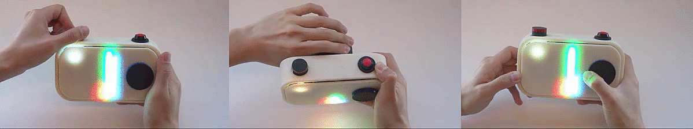
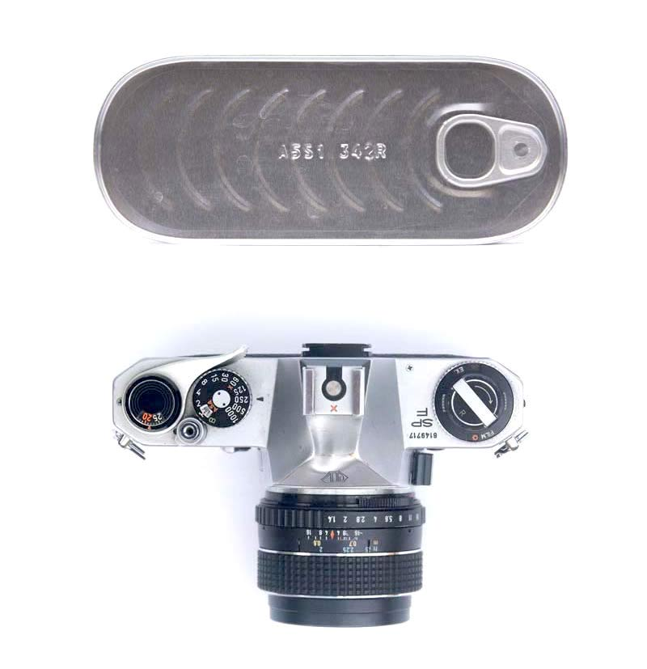
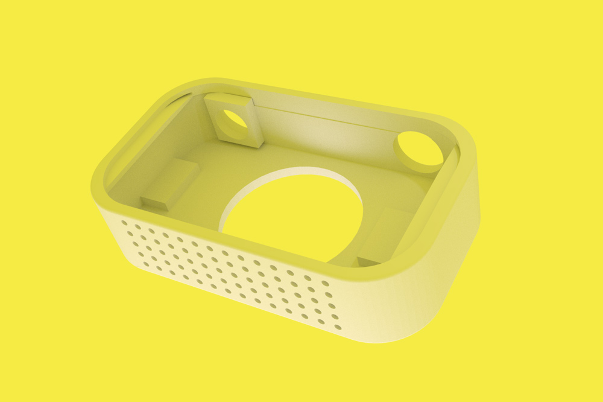

Interaction design
Sketching / wiring / coding
Steve Kwok
Esther Park
Camtone is a tangible toy that captures the color it sees so kids can view and play with its RGB levels to understand how digital colors are made.
In 4rd grade, I remember a special lesson in mixing paints, assembling color swatches, and reading color wheels. It was rudimentary, but opened possibilities for me as a young kid in art class. Today, children are introduced to more powerful tools like Photoshop and Blender, but many of these leave out the physical side of art making. How could this new generation of tools support physical learners? Camtone was created with a four week sprint to give an answer to this question. This project was a part a larger design course on wearable tech.
We landed on the form factor of a camera because of the interactions it affords: dials encourage twisting. We realized we could leverage this to encourage the manipulation of color. The conventional dials for exposure and shutter speed were remapped to mix the red, green and blue channels of the color they captured.
To refine the external surfaces, I began studying the topologies of various camera bodies, dials, and rounded objects.
From here, I started sketching possible forms. This exercise also led me to find a comfortable location and arrangement of our RGB display.
Steve threw my sketches in solidworks. Most of the parts were printed on my own printer. I made sure our model allowed for easy mounting of our arduino and lens-gears.
Coding Camtone’s functions was insightful. Because the rotary dials needed to be checked simultaneously for movement, I learned to use Arduino’s attachInterrupt function to allow sudden jumps in the code. While Esther coded the devices sounds and on/off function, I worked on displaying colors on led strips, as well as reading color data from the RGB sensor and dial encoders. I worked on each coded feature separately to ensure everything functioned reliably before building them together. Download my code here.